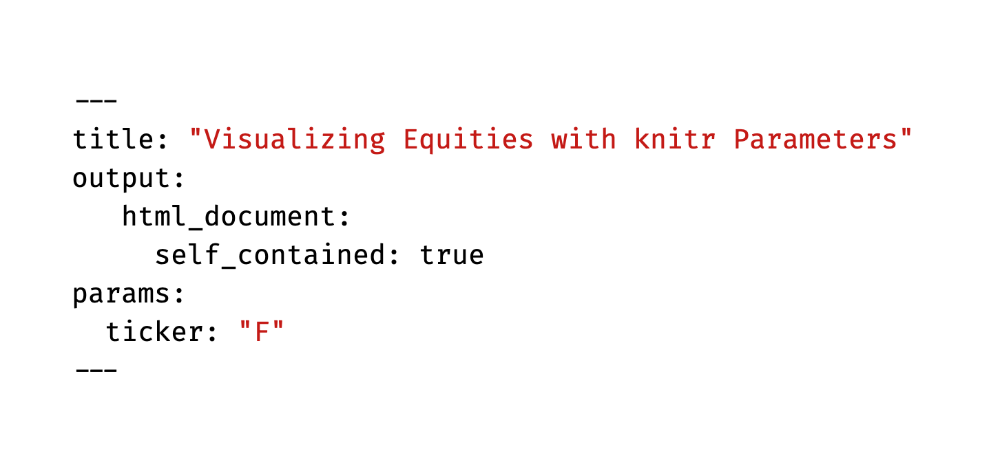

Parameterized R Markdown
A while back, I learned that you can parameterize markdown. You can send it something to process as argument. This is amazing. Let me show an example.
First, I want to build an RMarkdown file. In RStudio, that is File > New file > R Markdown.
We will need to add a bit of metadata to the top. The key component is the params: argument. I want to pass a ticker with a default option.

Now, let’s build up an example.
I want to load a few libraries.
library(tidyquant)
library(ggplot2)
library(fpp3)Without loading anything else, this markdown is aware of what I passed it in params$ticker. But tidyquant can make use of tickers and retrieve market OHLC data. So let me proxy that behavior with Goldman Sachs as the example.
params <- NULL
params$ticker <- "GS"Now my environment looks the same. Let me use tq_get to get the data.
dat <- tq_get(params$ticker)Now I want to use a special geometry for OHLC data. I will also give it a title that deploys the ticker and use the special theme.
dat %>% ggplot(aes(x = date, y = close)) +
geom_barchart(aes(open = open, high = high, low = low, close = close)) +
labs(title = paste(params$ticker,"Bar Chart"), y = "Closing Price", x = "") +
theme_tq()
Let’s look at a smooth with a simple 50 day moving average.
dat %>%
ggplot(aes(x = date, y = close)) +
geom_line() + # Plot stock price
geom_bbands(aes(high = high, low = low, close = close), ma_fun = SMA, n = 50)
We can also invoke tidyquant functions of the data, like returns or more complicated financial quantities.
dat %>% tq_transmute(select= adjusted,
mutate_fun = periodReturn,
period = "daily",
col_rename = "Ra") %>%
as_tsibble(index=date) %>%
autoplot()## Warning: `type_convert()` only converts columns of type 'character'.
## - `df` has no columns of type 'character'## Plot variable not specified, automatically selected `.vars = Ra`
After I have the model report written, I can save the file and stop. The key is to note the file name and the full path. I will store mine in whatever my current working directory is. I want two more libraries; I need the rmarkdown library to render the file and I need the purrr library to map my tickers into render. I created a little function for this called Equity.Analyser to simplify my use of map. tidyquant has a function for acquiring all of the basic data on members of an index or exchange. I want to choose the S and P 400 and then generate a report for each one. The one trick is that I need a simple vector to pass to map so I unlist the column. This produced nearly 370 little reports in about 10 minutes.
library(rmarkdown)
library(purrr)
Equity.Analyser <- function(x) {
render("TQ-Parameters.Rmd", params = list(ticker = x), output_file = paste0(x,"-TQ-Parameters.html"))
}
SP400 <- tq_index("SP400")
SP400 %>% select(symbol) %>% unlist() %>% map(., Equity.Analyser)